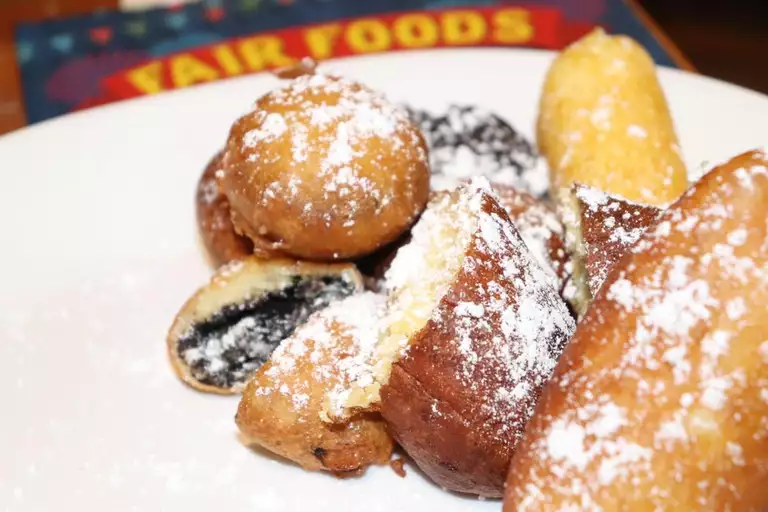

Deep Fried Oreos


You'll only need five ingredients to make these irresistible deep-fried Oreos: vegetable oil (for frying and for the batter), milk, an egg, pancake mix, and a package of Oreos (regular and Double Stuf Oreos both work great). Try different Oreo flavors to switch things up!
These fried Oreos are best eaten the day they're made. However, if you have leftovers, you can store them in an airtight container in the refrigerator for up to three days.
Ingredients:
- 2 quarts vegetable oil for frying
- 1 cup milk
- 1 large egg
- 2 teaspoons vegetable oil
- 1 cup pancake mix
- 1 (18 ounce) package cream-filled chocolate sandwich cookies (such as Oreo®)
Steps:
- Heat oil in a deep fryer or large saucepan to 375 degrees F (190 degrees C).
- Whisk milk, egg, and 2 teaspoons of vegetable oil in a large bowl until smooth. Stir in the pancake mix until no dry lumps remain.
- Dip cookies into batter, one at a time, and carefully place into hot oil. Fry in batches, 4 or 5 at a time, until cookies are golden brown, about 2 minutes. Drain on a paper towel-lined plate before serving.